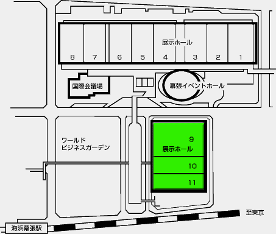

幕張メッセ(日本コンベンションセンター国際展示場)
新館ホール９・１０・１１

＋＋＋＋ 電車でご来場の場合 ＋＋＋＋
JR京葉線・・・海浜幕張駅から徒歩5分(東京駅から約30分、蘇我駅から約12分) 。
JR総武線・・・幕張本郷駅から幕張メッセ行き、または海浜幕張駅行きバスで15分徒歩5分(秋葉原駅から約40分)。
＋＋＋＋ お車でご来場の場合 ＋＋＋＋
東京都心・羽田方面から約40分。湾岸習志野I.C.(東関東自動車道)、または幕張I.C.(京葉道路)から約5分。
成田方面から約30分。湾岸千葉I.C.(東関東自動車道)から約5分。